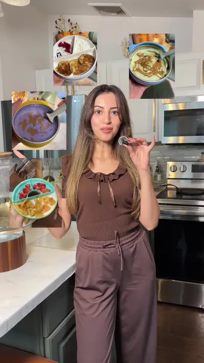

5 toddler breakfasts that are always a win in our house

Ingredients
- avocado
- yogurt
- honey
- peanut butter
- banana
- eggs
- oats
- blueberries
- cottage cheese
Steps
- I just blend avocado with his favorite yogurt, add a little honey and drizzle peanut butter on top because he loves it.
- You can totally do maple syrup, almond butter or whatever spread your toddler likes.
- They're made with kiwi, banana and eggs and I usually serve them with some berries or yogurt.
- You can use baby oats cereal or just blend regular oats, cook them with blueberries then blend everything with cottage cheese.
- And of course I drizzle some peanut butter on top for healthy fats and that's it.
- I like to boil the sweet potato the night before so it's ready to go in the morning.
- I like to serve them with fruits or whatever spread they're into that day.
- I always batch cook these and keep some in the freezer so on mornings when I really don't feel like making breakfast I still have something ready that I know he'll actually eat.
From the video's narration and on-screen text, by @soniamazri on TikTok. Open original